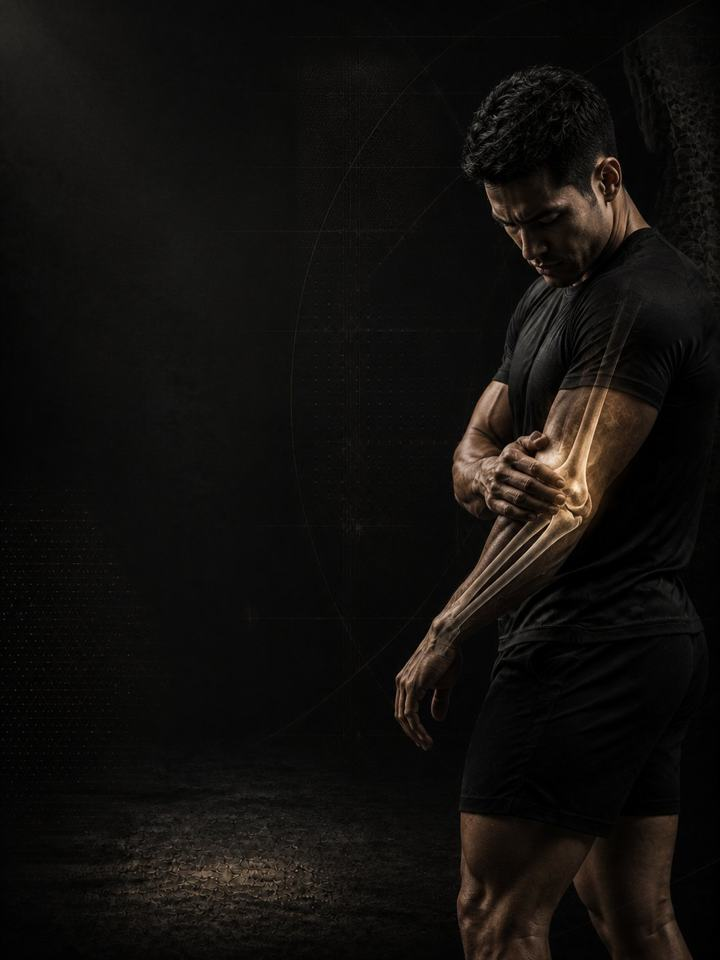

Elbow & Wrist Pain
Rebuild tendon capacity at the elbow and wrist instead of resting it away.
- Built fortennis elbow, golfer's elbow, and the forearm ache that follows a day of typing or gripping
- Schedulea 10–15 minute daily routine, plus 3 strength days a week
- Equipmentdaily routine needs a light dumbbell and a band. Strength days need a full gym.
- Formatmobile PDF, every exercise linked to a demo video
The store opens soon. For now, Buy opens an Instagram message and you receive the PDF there.
Why elbow and wrist pain keeps coming back
Tennis elbow, golfer's elbow and the deep ache after a day of typing are the same story told three ways: a tendon asked to do more than it has been built for. The pain sits at the bone, the grip weakens, and opening a jar or holding a mug becomes the reminder.
The instinct is to rest, brace it and wait, and that is why these problems last months instead of weeks. Elbow tendon pain is a capacity problem, not an inflammation problem, which is why anti-inflammatories give a fortnight of relief and change nothing. Tendons don't heal through rest. They adapt to load, applied in the right dose, slowly and repeatedly. This program delivers that dose, and fixes the shoulder and grip weaknesses that put the elbow in that position to begin with.
Your week
A short daily routine, plus three strength days at the gym. Any three days work, as long as they are not back to back. One example:
| Sun | Mon | Tue | Wed | Thu | Fri | Sat |
|---|---|---|---|---|---|---|
| Day 1 + daily routine | Daily routine | Day 2 + daily routine | Daily routine | Day 3 + daily routine | Daily routine | Daily routine |
How it runs:
- Test first. Four tests before week 1, repeated after weeks 3 and 6. Grip strength is the number that moves first.
- Daily routine, 10–15 min. Seven movements, every day. Tendons respond to how often they are loaded more than to how hard, so daily is the dose.
- Strength days. Days 1, 2 and 3, done in order, training grip, forearm and shoulder.
The five patterns behind most elbow and wrist pain
Something increased: hours at a keyboard, a new racket, a heavier grip, more pressing. These five patterns are where the shortfall usually sits, and the last one is the one most people never think to check.
-
Overloaded outer elbow tendons. The tendons on the outside of the elbow hold the wrist steady every time you grip. Grip all day without the capacity for it, and the tendon at the bony point outside the elbow becomes the weak link. It hurts to grip, lift a kettle or shake hands. In the program: Eccentric Wrist Extension, Tyler Twist, Isometrics
-
Overloaded inner elbow. The inside of the elbow takes the load when you curl, pull or turn the forearm inward. Heavy pulling, a hard grip or a repeated twisting action overloads it. It is the same problem as its outside neighbour, on the other side of the joint. In the program: Wrist Flexion Curls, Pronation Work, Rows
-
Weak grip and forearm endurance. Grip is the honest measure of everything below the elbow, and it tires long before you notice. When it fails mid-task, the forearm compensates with tension, and the tendon absorbs the difference. In the program: Dead Hangs, Carries, Isometric Grip Hold
-
Stiff wrist. Press-ups, front racks and even a keyboard need the wrist to bend back. Without that range the joint jams at the end, and the load runs back into the forearm and elbow instead of through the hand. In the program: Wrist CARs, Quadruped Rocking, Wrist Stretches
-
Weak shoulder and shoulder blade. This is the one people miss. A shoulder blade that does not control the arm leaves the elbow and wrist to steady the whole limb. Fix the elbow and ignore the shoulder, and the pain returns within a season. In the program: Rows, Face Pulls, Carries
Your pattern adds. The PDF lists extra exercises for each pattern. Add the ones for the patterns that sound most like you at the end of each strength day, at 3 sets each.
How the 6 weeks progress
The daily routine stays the same for all six weeks. The strength days move up a level every two weeks.
| Weeks 1–2 | Weeks 3–4 | Weeks 5–6 | |
|---|---|---|---|
| Phase | Control | Build | Integrate |
| Focus | Isometrics (holds) to calm pain | Heavy, slow loading | Speed and carries |
| Working sets per week | 57 | 57 | 60 |
Average effort climbs from about 6 out of 10 in weeks 1–2, to 6.8 in weeks 3–4 and 7.4 in weeks 5–6. That scale is RPE, a 1–10 rating of how hard a set feels: 6 leaves about 4 reps in the tank, and 7.4 leaves about 2 to 3.
The rules that make it work
- The work climbs as the tendon earns it. Isometrics come first because they reduce pain. Heavy, slow loading follows because that is what rebuilds a tendon. Speed and carries come last.
- The daily routine is the medicine. The strength days are the training. The routine does not change, so it can do its job every day.
- Keep training. The PDF has swaps for the lifts that grip hardest, so you don't have to stop everything while the tendon rebuilds.
- Decisions follow numbers. You retest after weeks 3 and 6.
How you'll measure progress
Four tests before week 1, then again after weeks 3 and 6, recorded on the score sheet in the PDF. They track the things that matter here, such as pain-free grip strength and a dead hang.
What good progress looks like
- Weeks 1–2: the constant ache settles, and the isometrics start to feel like relief.
- Weeks 3–4: pain-free grip climbs, and daily tasks stop reminding you.
- Weeks 5–6: loaded and fast work is tolerated, and the elbow handles a full session again.
Tendons adapt slowly. Six weeks builds real capacity, and the remodelling carries on for months after. If nothing has moved by the week 3 retest, get a professional assessment instead of pushing harder.
Finishing standard at week 6: a pain-free grip test, 2/10 pain or less through a normal day, a dead hang past 30 seconds, and a grip number that has climbed since your first test. If grip is still climbing, repeat phase 3.
Change the load, not just the arm
Tendons are loaded by the daily total, not the session, and most of that total is outside the gym. Change what your hand does for eight hours: a thicker grip on the racket, the pen and the mouse, forearms supported at the desk, and a five-minute break from gripping every hour. If a specific activity started the pain, cut it by about half for two weeks rather than stopping it entirely. Protect the two free painkillers as well: 7–9 hours of sleep and managed stress.
The science
Every program in the library is built on published research, and how strong that research is gets stated, not implied. Where the evidence is limited, the page says so.
| Finding | Source | What it does not show |
|---|---|---|
| Strength training cuts sports injuries to under a third of the control rate. Stretching does not reduce them. | Lauersen, Bertelsen & Andersen, British Journal of Sports Medicine 2014. Meta-analysis of 25 randomised trials, 26,610 participants. PMID 24100287 | Risk ratio 0.32 for strength training and 0.96 for stretching. The trials varied a lot, and dose was not standardised. |
| Every sensible prescription beats not training. Heavier loads rank highest for strength. | Currier, McLeod, Banfield et al., British Journal of Sports Medicine 2023. Network meta-analysis, 178 strength and 119 hypertrophy studies. PMID 37414459 | The differences between prescriptions were small, and all of them worked. |
| Strength keeps improving as weekly sets rise, with diminishing returns. Training more often reliably helps strength. | Pelland, Remmert, Robinson, Hinson & Zourdos, Sports Medicine 2025. Meta-regressions, 67 studies, 2,058 participants (79% male). PMID 41343037 | How sets were counted (direct or indirect) changes the numbers considerably. |
| Strength gains are similar across a wide range of reps left in reserve. Training to failure is not needed for strength. | Robinson, Pelland, Remmert, Refalo, Jukic, Steele & Zourdos, Sports Medicine 2024. Meta-regressions, trained and untrained participants. PMID 38970765 | Reps in reserve had to be estimated from study descriptions, and the authors call the analysis exploratory. Treat the direction as informative, not the exact numbers. |
What's next
After 6 weeks:
- The shoulder needs work too: Shoulder & Scapular
- Build strength and muscle: Foundation Strength
- Train like an athlete: Athletic Development
- Another area needs work: the Corrective series
Before you buy: get cleared first if
- You have chest pain, unusual breathlessness, palpitations or dizziness with exertion.
- You have uncontrolled high blood pressure, a known heart condition, or recent surgery.
- You are pregnant or recently post-partum. Get clearance and a tailored program first.
- Your pain started with a specific injury (a pop, the joint giving way, or swelling within hours), or you have numbness, weakness, fever or pain that wakes you at night.
This program is general fitness guidance. It does not replace a medical assessment.
The store opens soon. For now, Buy opens an Instagram message and you receive the PDF there.